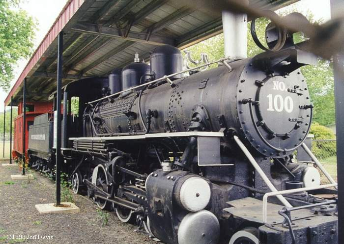

Last updated: 24 June, 2015
| Builder: | ALCO (Cooke) |
| Build #: | 62965 |
| Date: | 1921 |
| Engine #: | 100 |
| Railroad: | Weyerhaeuser Railroad |
| Website: | |
| Email: | |
| Location 1: | Central Park, 150 Willamette St, Sutherlin, OR 97479 Parking. |
| GPS: | 43.390606, -123.309163 |
| Phone: | |
| Status: | Display |
| Notes: | Weyerhaeuser Timber Company #100 is an ALCO/COOKE Prairie built in 1921 for the City of San Francisco (Hetch Hetchy Railroad) at Groveland, CA as #5. In 1937, Weyerhaeuser purchased the locomotive for their operations at Vail, WA, and renumbered it to #100. In 1948, #100 went south to Weyerhaeuser's operation at Sutherlin, OR, and then in 1961 to Springfield, OR. In 1962, Weyerhaeuser donated #100 to the City of Sutherlin for display. #100 was recently painted and a shelter built over the locomotive to protect it from the elements. |
| Class: | |
| Gauge: | 4'-8½" |
| F.M.Whyte: | 2-6-2 |
| Drivers: | |
| Gear Ratio: | |
| Tractive Effort: | |
| Weight: | |
| Weight on Drivers: | |
| Length: | |
| Boiler: | |
| Cylinders: | |
| Top Speed: | |
| Fuel: | |
| Fuel Type: | |
| Water: | |
| Steam psi: |